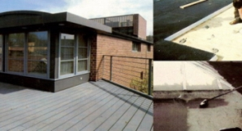

Impermeabilizzazioni
Ogni costruzione è un bene importante. Le impermeabilizzazioni, quindi, devono essere definitive per evitare futuri danni alle strutture e onerosi interventi di manutenzione e rifacimento. Sia che si tratti di un piccolo lavoro o di una grande opera, ogni intervento di impermeabilizzazione deve essere eseguito con la massima sicurezza. Isoedilizia è specializzata in interventi definitivi effettuati con propria manodopera direttamente controllata. Impermeabilizzare bene si può! Servono la capacità, la competenza e gli uomini adeguati per eseguire lavori che durino nel tempo.
